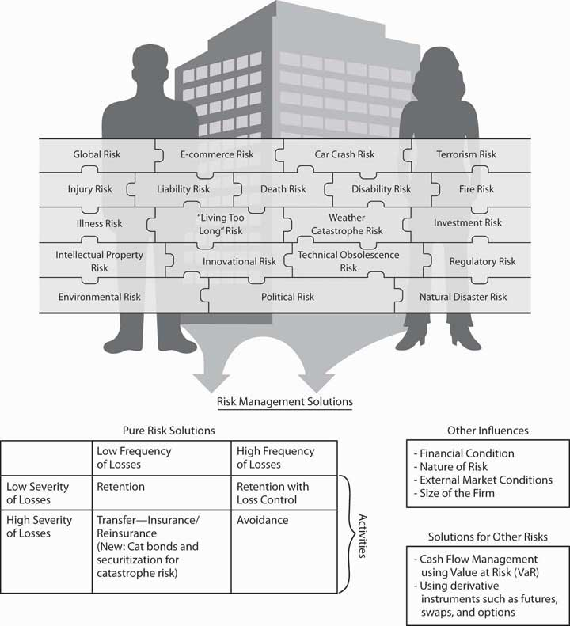
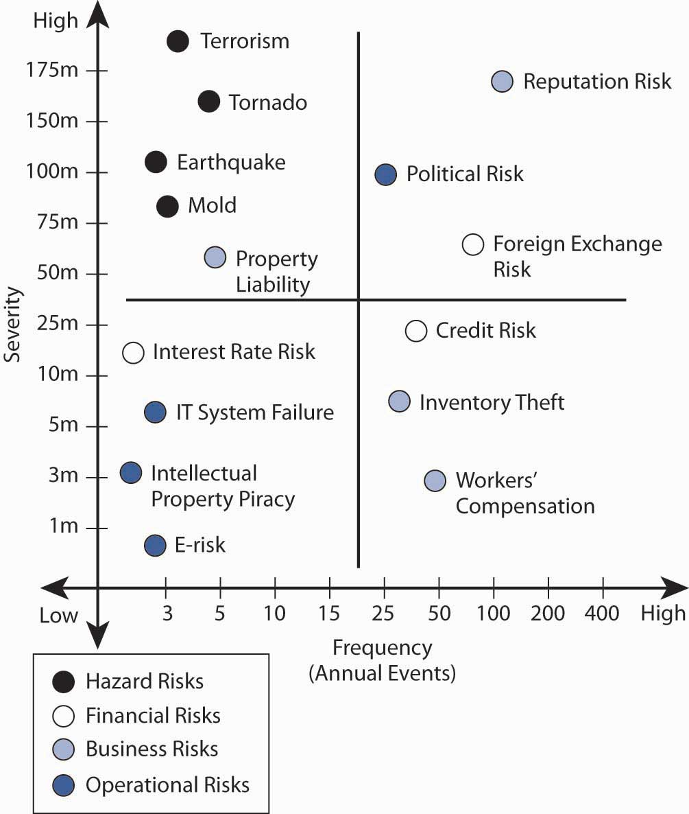
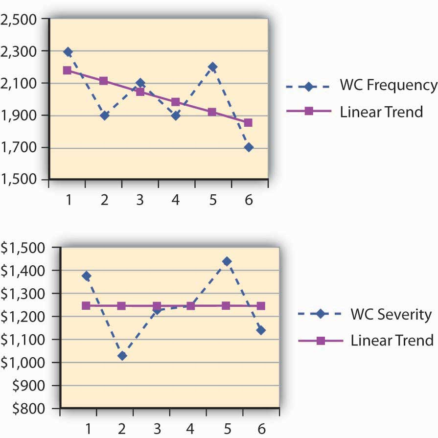
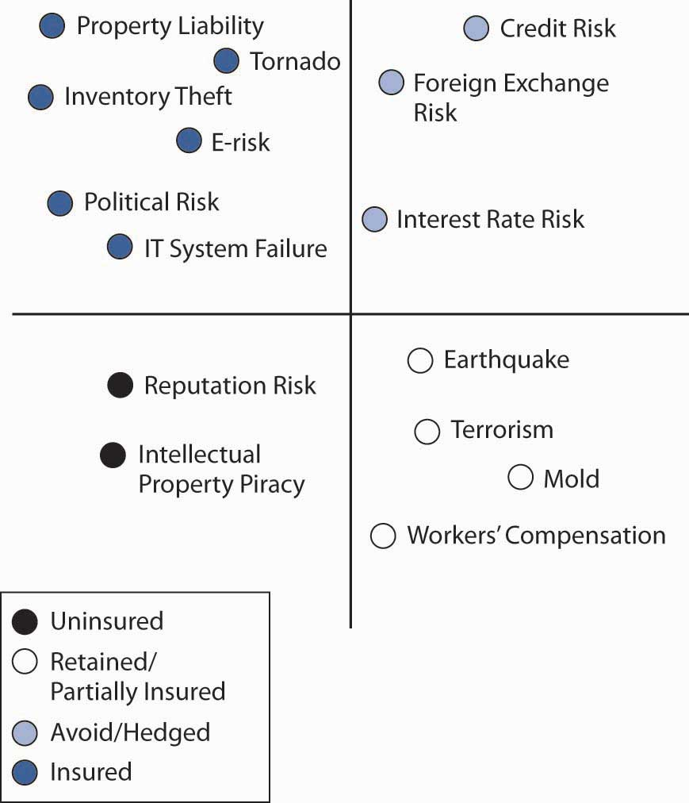
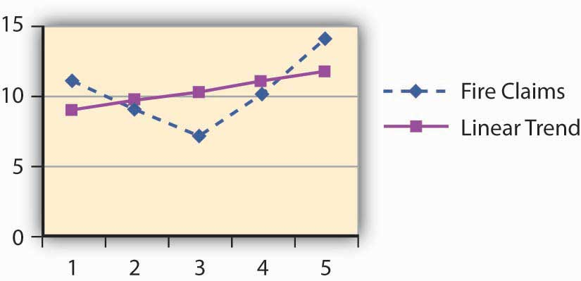
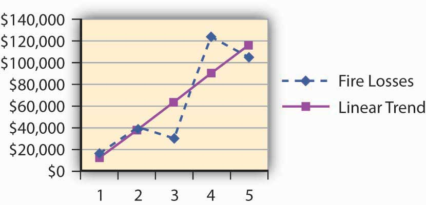
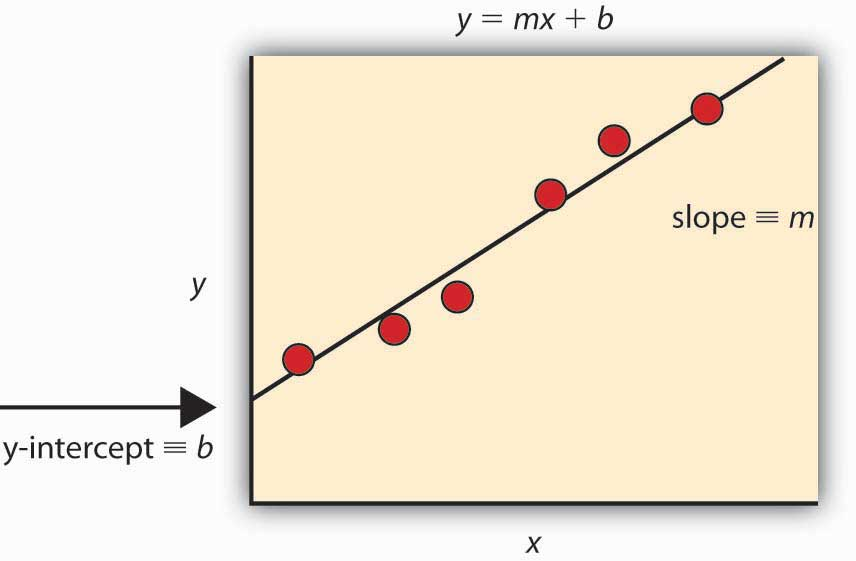

In the prior chapters, we discussed risks from many aspects. With this chapter we begin the discussion of risk management and its methods that are so vital to businesses and to individuals. Today’s unprecedented global financial crisis following the man-made and natural megacatastrophes underscore the urgency for studying risk management and its tools. Information technology, globalization, and innovation in financial technologies have all led to a term called “enterprise risk management” (ERM). As you learned from the definition of risk in Chapter 1 "The Nature of Risk: Losses and Opportunities" (see Figure 1.2 "Uncertainty as a Precondition to Risk"), ERM includes managing pure opportunity and speculative risks. In this chapter, we discuss how firms use ERM to further their goals. This chapter and Chapter 5 "The Evolution of Risk Management: Enterprise Risk Management" that follows evolve into a more thorough discussion of ERM. While employing new innovations, we should emphasize that the first step to understanding risk management is to learn the basics of the fundamental risk management processes. In a broad sense, they include the processes of identifying, assessing, measuring, and evaluating alternative ways to mitigate risks.
The steps that we follow to identify all of the entity’s risks involve measuring the frequency and severity of losses, as we discussed in Chapter 1 "The Nature of Risk: Losses and Opportunities" and computed in Chapter 2 "Risk Measurement and Metrics". The measurements are essential to create the risk map that profile all the risks identified as important to a business. The risk map is a visual tool used to consider alternatives of the risk management tool set. A risk map forms a grid of frequency and severity intersection points of each identified and measured risk. In this and the next chapter we undertake the task of finding risk management solutions to the risks identified in the risk map. Following is the anthrax story, which occurred right after September 11. It was an unusual risk of high severity and low frequency. The alternative tools for financial solutions to each particular risk are shown in the risk management matrix, which provides fundamental possible solutions to risks with high and low severity and frequency. These possible solutions relate to external and internal conditions and are not absolutes. In times of low insurance prices, the likelihood of using risk transfer is greater than in times of high rates. The risk management process also includes cost-benefit analysis.
The anthrax story was an unusual risk of high severity and low frequency. It illustrates a case of risk management of a scary risk and the dilemma of how best to counteract the risks.
The date staring up from the desk calendar reads June 1, 2002, so why is the Capitol Hill office executive assistant opening Christmas cards? The anthrax scare after September 11, 2001, required these late actions. For six weeks after an anthrax-contaminated letter was received in Senate Majority Leader Tom Daschle’s office, all Capitol Hill mail delivery was stopped. As startling as that sounds, mail delivery is of small concern to the many public and private entities that suffered loss due to the terrorism-related issues of anthrax. The biological agent scare, both real and imagined, created unique issues for businesses and insurers alike since it is the type of poison that kills very easily.
Who is responsible for the clean-up costs related to bioterrorism? Who is liable for the exposure to humans within the contaminated facility? Who covers the cost of a shutdown of a business for decontamination? What is a risk manager to do?
Senator Charles Grassley (R-Iowa), member of the Senate Finance Committee at the time, estimated that the clean-up project cost for the Hart Senate Office Building would exceed $23 million. Manhattan Eye, Ear, and Throat Hospital closed its doors in late October 2001 after a supply-room worker contracted and later died from pulmonary anthrax. The hospital—a small, thirty-bed facility—reopened November 6, 2001, announcing that the anthrax scare closure had cost the facility an estimated $700,000 in revenue.
These examples illustrate the necessity of holistic risk management and the effective use of risk mapping to identify any possible risk, even those that may remotely affect the firm. Even if their companies aren’t being directly targeted, risk managers must incorporate disaster management plans to deal with indirect atrocities that slow or abort the firms’ operations. For example, an import/export business must protect against extended halts in overseas commercial air traffic. A mail-order-catalog retailer must protect against long-term mail delays. Evacuation of a workplace for employees due to mold infestation or biochemical exposure must now be added to disaster recovery plans that are part of loss-control programs. Risk managers take responsibility for such programs.
After a temporary closure, reopened facilities still give cause for concern. Staffers at the Hart Senate Office Building got the green light to return to work on January 22, 2002, after the anthrax remediation process was completed. Immediately, staffers began reporting illnesses. By March, 255 of the building’s employees had complained of symptoms that included headaches, rashes, and eye or throat irritation, possibly from the chemicals used to kill the anthrax. Was the decision to reopen the facility too hasty?
Sources: “U.S. Lawmakers Complain About Old Mail After Anthrax Scare.” Dow Jones Newswires, 8 May 2002; David Pilla, “Anthrax Scare Raises New Liability Issues for Insurers,” A.M. Best Newswire, October 16, 2001; Sheila R. Cherry, “Health Questions Linger at Hart,” Insight on the News, April 15, 2002, p.16; Cinda Becker, “N.Y. Hospital Reopens; Anthrax Scare Costs Facility $700,000,” Modern Healthcare, 12 November 2001, p. 8; Sheila R. Cherry, “Health Questions Linger at Hart,” Insight on the News, April 15, 2002, p. 16(2).
Today’s risk managers explore all risks together and consider correlations between risks and their management. Some risks interact positively with other risks, and the occurrence of one can trigger the other—flood can cause fires or an earthquake that destroys a supplier can interrupt business in another side of the country. As we discussed in Chapter 1 "The Nature of Risk: Losses and Opportunities", economic systemic risks can impact many facets of the corporations, as is the current state of the world during the financial crisis of 2008.
In our technological and information age, every person involved in finding solutions to lower the adverse impact of risks uses risk management information systems (RMIS), which are data bases that provide information with which to compute the frequency and severity, explore difficult-to-identify risks, and provide forecasts and cost-benefits analyses.
This chapter therefore includes the following:
Now that we understand the notion and measurement of risks from Chapter 1 "The Nature of Risk: Losses and Opportunities" and Chapter 2 "Risk Measurement and Metrics", and the attitudes toward risk in Chapter 3 "Risk Attitudes: Expected Utility Theory and Demand for Hedging", we are ready to begin learning about the actual process of risk management. Within the goals of the firm discussed in Chapter 1 "The Nature of Risk: Losses and Opportunities", we now delve into how risk managers conduct their jobs and what they need to know about the marketplace to succeed in reducing and eliminating risks. Holistic risk management is connected to our complete package of risks shown in Figure 4.1 "Links between the Holistic Risk Picture and the Risk Management Alternative Solutions". To complete the puzzle, we have to
Risk management decisions depend on the nature of the identified risks, the forecasted frequency and severity of losses, cost-benefit analysis, and using the risk management matrix in context of external market conditions. As you will see later in this chapter, risk managers may decide to transfer the risk to insurance companies. In such cases, final decisions can’t be separated from the market conditions at the time of purchase. Therefore, we must understand the nature of underwriting cycles, which are the business cycles of the insurance industry when insurance processes increase and fall (explained in Chapter 6 "The Insurance Solution and Institutions"). When insurance prices are high, risk management decisions differ from those made during times of low insurance prices. Since insurance prices are cyclical, different decisions are called for at different times for the same assessed risks.
Risk managers also need to understand the nature of insurance well enough to be aware of which risks are uninsurable. Overall, in this Links section, shown in Figure 4.1 "Links between the Holistic Risk Picture and the Risk Management Alternative Solutions", we can complete our puzzle only when we have mitigated all risks in a smart risk management process.
Figure 4.1 Links between the Holistic Risk Picture and the Risk Management Alternative Solutions
Traditionally, a firm’s risk management function ensured that the pure risks of losses were managed appropriately. The risk manager was charged with the responsibility for specific risks only. Most activities involved providing adequate insurance and implementing loss-control techniques so that the firm’s employees and property remained safe. Thus, risk managers sought to reduce the firm’s costs of pure risks and to initiate safety and disaster management.
Typically, the traditional risk management position has reported to the corporate treasurer. Handling risks by self-insuringRetaining the risk within the firm. (retaining risks within the firm) and paying claims in-house requires additional personnel within the risk management function. In a small company or sole proprietorship, the owner usually performs the risk management function, establishing policy and making decisions. In fact, each of us manage our own risks, whether we have studied risk management or not. Every time we lock our house or car, check the wiring system for problems, or pay an insurance premium, we are performing the same functions as a risk manager. Risk managers use agents or brokers to make smart insurance and risk management decisions (agents and brokers are discussed in Chapter 7 "Insurance Operations").
The traditional risk manager’s role has evolved, and corporations have begun to embrace enterprise risk management in which all risks are part of the process: pure, opportunity, and speculative risks. With this evolution, firms created the new post of chief risk officer (CRO). The role of CROs expanded the traditional role by integrating the firm’s silos, or separate risks, into a holistic framework. Risks cannot be segregated—they interact and affect one another.
In addition to insurance and loss control, risk managers or CROs use specialized tools to keep cash flow in-house, which we will discuss in Chapter 6 "The Insurance Solution and Institutions" and Chapter 7 "Insurance Operations". Captives are separate insurance entities under the corporate structure—mostly for the exclusive use of the firm itself. CROs oversee the increasing reliance on capital market instruments to hedge risk. They also address the entire risk mapA visual tool used to consider alternatives of the risk management tool set.—a visual tool used to consider alternatives of the risk management tool set—in the realm of nonpure risks. For example, a cereal manufacturer, dependent upon a steady supply of grain used in production, may decide to enter into fixed-price long-term contractual arrangements with its suppliers to avoid the risk of price fluctuations. The CRO or the financial risk managers take responsibility for these trades. They also create the risk management guideline for the firm that usually includes the following:
Writing risk management manuals set up the process of identification, monitoring, assessment, evaluation, and adjustments.
In larger organizations, the risk manager or CRO has differing authority depending upon the policy that top management has adopted. Policy statements generally outline the dimensions of such authority. Risk managers may be authorized to make decisions in routine matters but restricted to making only recommendations in others. For example, the risk manager may recommend that the costs of employee injuries be retained rather than insured, but a final decision of such magnitude would be made by top management.
A typical risk management function includes the steps listed above: identifying risks, assessing them, forecasting future frequency and severity of losses, mitigating risks, finding risk mitigation solutions, creating plans, conducting cost-benefits analyses, and implementing programs for loss control and insurance. For each property risk exposure, for example, the risk manager would adopt the following or similar processes:
Risk management policy statementsThe primary tool to communicate risk management objectives. are the primary tools to communicate risk management objectives. Forward-thinking firms have made a place for risk management policy statements for many years as leaders discuss the risk management process. Other tools used to relay objectives may include company mission statements, risk management manuals (which provide specific guidelines for detailed risk management problems, such as how to deal with the death or disability of a key executive), and even describe the risk manager’s job description. Effective risk management objectives coincide with those of the organization generally, and both must be communicated consistently. Advertisements, employee training programs, and other public activities also can communicate an organization’s philosophies and objectives.
The process of identifying all of a firm’s risks and their values is a very detailed process. It is of extreme importance to ensure that the business is not ignoring anything that can destroy it. To illustrate how the process takes shape, imagine a business such as Thompson’s department store that has a fleet of delivery trucks, a restaurant, a coffee shop, a restaurant, and a babysitting service for parents who are shopping. The risk manager who talks to each employee in the store usually would ask for a list of all the perils and hazards (discussed in Chapter 1 "The Nature of Risk: Losses and Opportunities") that can expose the operation to losses.
A simple analysis of this department store risk exposure nicely illustrates risk identification, which is a critical element of risk management. For the coffee shop and restaurant, the risks include food poisoning, kitchen fire, and injuries to customers who slip. Spilled coffee can damage store merchandise. For the babysitting service, the store may be liable for any injury to infants as they are fed or play or possibly suffer injuries from other kids. In addition to worry about employees’ possible injuries while at work or damage to merchandise from mistreatment, the store risk manager would usually worry about the condition of the floors as a potential hazard, especially when wet. Most risk managers work with the architectural schematics of the building and learn about evacuation routes in case of fires. The location of the building is also critical to identification of risks. If the department store is in a flood-prone area, the risks are different than if the store were located in the mountains. The process involves every company stakeholder. Understanding the supply chain of movement of merchandise is part of the plan as well. If suppliers have losses, risk managers need to know about the risk associated with such delays. This example is a short illustration of the enormous task of risk identification.
Today’s CRO also reviews the financial statement of the firm to ensure the financial viability within the financial risks, the asset risks and product risks the firm undertakes. We elaborate more on this aspect with examples in Chapter 5 "The Evolution of Risk Management: Enterprise Risk Management".
Discovering all risks, their assessments and their relationships to one another becomes critical to learning and understanding an organization’s tolerance for risk. This step comes after a separate and thorough review of each risk. Holistic risk mapping is the outcome of risk profilingA process that evaluates all the risks of the organizations and measures the frequency and severity of each risk., a process that evaluates all the risks of the organizations and measures the frequency and severity of each risk. Different kinds of organizations pose very different types of risk exposures, and risk evaluations can differ vastly among industries. Boeing, for example, has a tremendous wrongful death exposure resulting from plane crashes. Intellectual property piracy and property rights issues could have a big impact upon the operations of an organization like Microsoft.
The results of risk profiling can be graphically displayed and developed into a model. One such model is risk mappingCharting entire spectrums of risk, not individual risk “silos” from each separate business unit..Etti G. Baranoff, “Mapping the Evolution of Risk Management,” Contingencies (July/August 2004): 22–27. Risk mapping involves charting entire spectrums of risk, not individual risk “silos” from each separate business unit. Risk mapping becomes useful both in identifying risks and in choosing approaches to mitigate them. Such a map presents a cumulative picture of all the risks in one risk management solution chart. Different facets of risk could include
A risk map puts the risks a company faces into a visual medium to see how risks are clustered and to understand the relationships among risks. The risks are displayed on a severity and frequency grid after each risk is assessed. Risk maps can be useful tools for explaining and communicating various risks to management and employees. One map might be created to chart what risks are most significant to a particular company. This chart would be used to prioritize risk across the enterprise. Another map might show the risk reduction after risk management action is adopted, as we will show later in this chapter.Lee Ann Gjertsen, “‘Risk Mapping’ Helps RM’s Chart Solutions,” National Underwriter, Property & Casualty/Risk & Benefits Management Edition, June 7, 1999.
Figure 4.2 "Notable Notions Risk Map" presents an example of a holistic risk map for an organization examining the dynamics of frequency and severity as they relate to each risk. By assigning the probability of occurrence against the estimate of future magnitude of possible loss, risk managers can form foundations upon which a corporation can focus on risk areas in need of actions. The possible actions—including risk avoidance, loss control, and insurance (loss transfer)—provide alternative solutions during the discussion of the risk management matrix in this chapter.
Note that risk maps include plotting intersection points between measures of frequency (on an x-axis) and severity (on a y-axis) and visually plotting intersection points. Each point represents the relationship between the frequency of the exposure and the severity of the exposure for each risk measured.
Strategies for risk mapping will vary from organization to organization. Company objectives arise out of the firm’s risk appetite and culture. These objectives help determine the organization’s risk tolerance level (see Chapter 3 "Risk Attitudes: Expected Utility Theory and Demand for Hedging"). As in the separate risk management process for each risk exposure, the first step in mapping risk is to identify the firm’s loss exposures and estimate and forecast the frequency and severity of each potential risk. Figure 4.2 "Notable Notions Risk Map" displays (for illustration purposes only) quantified trended estimates of loss frequency and severity that risk managers use as inputs into the risk map for a hypothetical small import/export business, Notable Notions. The risk map graph is divided into the four quadrants of the classical risk management matrix (which we discuss in detail later in this chapter). As we will see, such matrices provide a critical part of the way to provide risk management solutions to each risk.
Figure 4.2 Notable Notions Risk Map
Several sample risks are plotted in Notable Notions’ holistic risk map.The exercise is abridged for demonstrative purposes. An actual holistic risk mapping model would include many more risk intersection points plotted along the frequency/severity X and Y axes. This model can be used to help establish a risk-tolerance boundary and determine priority for risks facing the organization. Graphically, risk across the enterprise comes from four basic risk categories:
Natural and man-made risks include unforeseen events that arise outside of the normal operating environment. The risk map denotes that the probability of a natural and man-made frequency is very low, but the potential severity is very high—for example, a tornado, valued at approximately $160 million. This risk is similar to earthquake, mold exposure, and even terrorism, all of which also fall into the low-frequency/high-severity quadrant. For example, in the aftermath of Hurricane Katrina, the New Orleans floods, and September 11, 2001, most corporations have reprioritized possible losses related to huge man-made and natural catastrophes. For example, more than 1,200 World Bank employees were sent home and barred from corporate headquarters for several days following an anthrax scare in the mailroom.Associated Press Newswire, May 22, 2002. This possibility exposes firms to large potential losses associated with an unexpected interruption to normal business operations. See the box in the introduction to this chapter Note 4.1 "How to Handle the Risk Management of a Low-Frequency but Scary Risk Exposure: The Anthrax Scare".
Financial risksUncertainty regarding the outcome of financial decisions, as influenced by factors such as prices, volatility, liquidity, credit markets, currency exchange, and general market conditions. arise from changing market conditions involving
The credit crisis that arose in the third and fourth quarters of 2008 affected most businesses as economies around the world slowed down and consumers retrench and lower their spending. Thus, risk factors that may provide opportunities as well as potential loss as interest rates, foreign exchange rates are embedded in the risk map. We can display the opportunities—along with possible losses (as we show in Chapter 5 "The Evolution of Risk Management: Enterprise Risk Management" in Figure 5.1 "The Links to ERM with Opportunities and Risks").
In our example, we can say that because of its global customer base, Notable Notions has a tremendous amount of exposure to exchange rate risk, which may provide opportunities as well as risks. In such cases, there is no frequency of loss and the opportunity risk is not part of the risk map shown in Figure 4.2 "Notable Notions Risk Map". If Notable Notions was a highly leveraged company (meaning that the firm has taken many loans to finance its operations), the company would be at risk of inability to operate and pay salaries if credit lines dried out. However, if it is a conservative company with cash reserves for its operations, Notable Notions’ risk map denotes the high number (frequency) of transactions in addition to the high dollar exposure (severity) associated with adverse foreign exchange rate movement. The credit risk for loans did not even make the map, since there is no frequency of loss in the data base for the company. Methods used to control the risks and lower the frequency and severity of financial risks are discussed in Chapter 5 "The Evolution of Risk Management: Enterprise Risk Management".
One example of business risks is reputation risk, which is plotted in the high-frequency/high-severity quadrant. Only recently have we identified reputation risk in map models. Not only do manufacturers such as Coca-Cola rely on their high brand-name identification, so do smaller companies (like Notable Notions) whose customers rely on stellar business practices. One hiccup in the distribution chain causing nondelivery or inconsistent quality in an order can damage a company’s reputation and lead to canceled contracts. The downside of reputation damage is potentially significant and has a long recovery period. Companies and their risk managers currently rate loss of good reputation as one of the greatest corporate threats to the success or failure of their organization.“Risk Whistle: Reputation Risk,” Swiss Re publication, http://www.swissre.com. A case in point is the impact on Martha Stewart’s reputation after she was linked to an insider trading scandal involving the biotech firm ImClone.Geeta Anand, Jerry Arkon, and Chris Adams, “ImClone’s Ex-CEO Arrested, Charged with Insider Trading,” Wall Street Journal, June 13, 2002, 1. The day after the story was reported in the Wall Street Journal, the stock price of Martha Stewart Living Omnimedia declined almost 20 percent, costing Stewart herself nearly $200 million.
Operational risks are those that relate to the ongoing day-to-day business activities of the organization. Here we reflect IT system failure exposure (which we will discuss in detail later in this chapter). On the figure above, this risk appears in the lower-left quadrant, low severity/low frequency. Hard data shows low down time related to IT system failure. (It is likely that this risk was originally more severe and has been reduced by backup systems and disaster recovery plans.) In the case of a nontechnology firm such as Notable Notions, electronic risk exposure and intellectual property risk are also plotted in the low-frequency/low-severity quadrant.
A pure risk (like workers’ compensation) falls in the lower-right quadrant for Notable Notions. The organization experiences a high-frequency but low-severity outcome for workers’ compensation claims. Good internal record-keeping helps to track the experience data for Notable Notions and allows for an appropriate mitigation strategy.
The location of each of the remaining data points on Figure 4.2 "Notable Notions Risk Map" reflects an additional risk exposure for Notable Notions.
Once a company or CRO has reviewed all these risks together, Notable Notions can create a cohesive and consistent holistic risk management strategy. Risk managers can also review a variety of effects that may not be apparent when exposures are isolated. Small problems in one department may cause big ones in another, and small risks that have high frequency in each department can become exponentially more severe in the aggregate. We will explore property and liability risks more in Chapter 9 "Fundamental Doctrines Affecting Insurance Contracts" and Chapter 10 "Structure and Analysis of Insurance Contracts".
Dana, the risk manager at Energy Fitness Centers, identified the risks of workers’ injury on the job and collected the statistics of claims and losses since 2003. Dana computed the frequency and severity using her own data in order to use the data in her risk map for one risk only. When we focus on one risk only, we work with the risk management matrixMatrix that provides alternative financial action to undertake for each frequency/severity combination on the risk map.. This matrix provides alternative financial action to undertake for each frequency/severity combination (described later in this chapter). Dana’s computations of the frequency and severity appear in Table 4.1 "Workers’ Compensation Loss History of Energy Fitness Centers—Frequency and Severity". Forecasting, on the other hand, appears in Table 4.2 "Workers’ Compensation Frequency and Severity of Energy Fitness Centers—Actual and Trended" and Figure 4.3 "Workers’ Compensation Frequency and Severity of Energy Fitness Centers—Actual and Trended". ForecastingProjecting the frequency and severity of losses into the future based on current data and statistical assumptions. involves projecting the frequency and severity of losses into the future based on current data and statistical assumptions.
Table 4.1 Workers’ Compensation Loss History of Energy Fitness Centers—Frequency and Severity
| Year | Number of WC Claims | WC Losses | Average Loss per Claim |
|---|---|---|---|
| 2003 | 2,300 | $3,124,560 | $1,359 |
| 2004 | 1,900 | $1,950,000 | $1,026 |
| 2005 | 2,100 | $2,525,000 | $1,202 |
| 2006 | 1,900 | $2,345,623 | $1,235 |
| 2007 | 2,200 | $2,560,200 | $1,164 |
| 2008 | 1,700 | $1,907,604 | $1,122 |
| Total | 12,100 | $14,412,987 | |
| Frequency for the whole period | Severity for the whole period | ||
| Mean | 2,017 | $2,402,165 | $1,191 |
| (See Chapter 2 "Risk Measurement and Metrics" for the computation) | |||
Table 4.2 Workers’ Compensation Frequency and Severity of Energy Fitness Centers—Actual and Trended
| WC Frequency | Linear Trend Frequency | WC Average Claim | Linear Trend Severity | |
|---|---|---|---|---|
| 2003 | 2,300 | 2,181 | $1,359 | $1,225 |
| 2004 | 1,900 | 2,115 | $1,026 | $1,226 |
| 2005 | 2,100 | 2,050 | $1,202 | $1,227 |
| 2006 | 1,900 | 1,984 | $1,235 | $1,228 |
| 2007 | 2,200 | 1,918 | $1,422 | $1,229 |
| 2008 | 1,700 | 1,852 | $1,122 | $1,230 |
| 2009 | Estimated | 1,786.67 | Estimated | $1,231.53 |
Figure 4.3 Workers’ Compensation Frequency and Severity of Energy Fitness Centers—Actual and Trended
Dana installed various loss-control tools during the period under study. The result of the risk reduction investments appear to be paying off. Her analysis of the results indicated that the annual frequency trend has decreased (see the negative slope for the frequency in Figure 4.2 "Notable Notions Risk Map"). The company’s success in decreasing loss severity doesn’t appear in such dramatic terms. Nevertheless, Dana feels encouraged that her efforts helped level off the severity. The slope of the annual severity (losses per claim) trend line is 1.09 per year—and hence almost level as shown in the illustration in Figure 4.2 "Notable Notions Risk Map". (See the Section 4.6 "Appendix: Forecasting" to this chapter for explanation of the computation of the forecasting analysis.)
With the ammunition of reducing the frequency of losses, Dana is planning to continue her loss-control efforts. Her next step is to convince management to invest in a new innovation in security belts for the employees. These belts have proven records of reducing the severity of WC claim in other facilities. In this example, we show her cost-benefit analysis—analysis that examines the cost of the belts and compares the expense to the expected reduction in losses or savings in premiums for insurance. If the benefit of cost reduction exceeds the expense for the belt, Dana will be able to prove her point. In terms of the actual analysis, she has to bring the future reduction in losses to today’s value of the dollar by looking at the present value of the reduction in premiums. If the present value of premium savings is greater than the cost of the belts, we will have a positive net present value (NPV) and management will have a clear incentive to approve this loss-control expense.
With the help of her broker, Dana plans to show her managers that, by lowering the frequency and severity of losses, the workers’ compensation rates for insurance can be lowered by as much as 20–25 percent. This 20–25 percent is actually a true savings or benefit for the cost-benefit analysis. Dana undertook to conduct cash flow analysisAnalysis that looks at the amount of cash that will be saved and brings it into today’s present value. for purchasing the new innovative safety belts project. A cash flow analysis looks at the amount of cash that will be saved and brings it into today’s present value. Table 4.3 "Net Present Value (NPV) of Workers’ Compensation Premiums Savings for Energy Fitness Centers When Purchasing Innovative Safety Belts for $50,000" provides the decrease in premium anticipated when the belts are used as a loss-control technique.
The cash outlay required to purchase the innovative belts is $50,000 today. The savings in premiums for the next few years are expected to be $20,000 in the first year, $25,000 in the second year, and $30,000 in the third year. Dana would like to show her managers this premium savings over a three-year time horizon. Table 4.3 "Net Present Value (NPV) of Workers’ Compensation Premiums Savings for Energy Fitness Centers When Purchasing Innovative Safety Belts for $50,000" shows the cash flow analysis that Dana used, using a 6 percent rate of return. For 6 percent, the NPV would be ($66,310 – 50,000) = $16,310. You are invited to calculate the NPV at different interest rates. Would the NPV be greater for 10 percent? (The student will find that it is lower, since the future value of a lower amount today grows faster at 10 percent than at 6 percent.)
Table 4.3 Net Present Value (NPV) of Workers’ Compensation Premiums Savings for Energy Fitness Centers When Purchasing Innovative Safety Belts for $50,000
| Savings on Premiums | Present Value of $1 (at 6 percent) | Present Value of Premium savings | |
|---|---|---|---|
| End of Year | End of Year | ||
| 1 | $20,000 | 0.943 | $18,860 |
| 2 | $25,000 | 0.890 | $22,250 |
| 3 | $30,000 | 0.840 | $25,200 |
| Total present value of all premium savings | $66,310 | ||
| Net present value = $66,310 − $50,000 = $16,310 > 0 | |||
Use a financial calculator
Risk managers rely upon data and analysis techniques to assess and evaluate and thus to make informed decisions. One of the risk managers’ primary tasks—as you see from the activities of Dana at Energy Fitness Centers—is to develop the appropriate data systems to allow them to quantify the organization’s loss history, including
We call such computerized quantifications a risk management information systemComputerized data systems to allows a risk manager to quantify the organization’s loss history., or RMIS. An RMIS provides risk managers with the ability to slice and dice the data in any way that may help risk managers assess and evaluate the risks their companies face. The history helps to establish probability distributions and trends analysis. When risk managers use good data and analysis to make risk reduction decisions, they must always include consideration of financial concepts (such as the time value of money) as shown above.
The key to good decision making lies in the risk managers’ ability to analyze large amounts of data collected. A firm’s data warehousingA system of housing large sets of data for strategic analysis and operations. (a system of housing large sets of data for strategic analysis and operations) of risk data allows decision makers to evaluate multiple dimensions of risks as well as overall risk. Reporting techniques can be virtually unlimited in perspectives. For example, risk managers can sort data by location, by region, by division, and so forth. Because risk solutions are only as good as their underlying assumptions, RMIS allows for modeling data to assist in the risk exposure measurement process. Self-administered retained coverages have experienced explosive growth across all industries. The boom has meant that systems now include customized Web-based reporting capabilities. The technological advances that go along with RMIS allows all decision makers to maximize a firm’s risk/reward tradeoff through data analysis.
Following is the loss data for slip-and-fall shoppers’ medical claims of the grocery store chain Derelex for the years 2004–2008.
What should be the costs today for this mats to break even? Use cost-benefit analysis at 6 percent.
| Year | Number of Slip and Fall Claims | Slip-and-Fall Losses |
|---|---|---|
| 2004 | 1,100 | $1,650,000 |
| 2005 | 900 | $4,000,000 |
| 2006 | 700 | $3,000,000 |
| 2007 | 1,000 | $12,300,000 |
| 2008 | 1,400 | $10,500,000 |
Once they are evaluated and forecasted, loss frequency and loss severity are used as the vertical and horizontal lines in the risk management matrix for one specific risk exposure. Note that such a matrix differs from the risk map described below (which includes all important risks a firm is exposed to). The risk management matrix includes on one axis, categories of relative frequency (high and low) and on the other, categories of relative severity (high and low). The simplest of these matrices is one with just four cells, as shown in the pure risk solutions in Table 4.4 "The Traditional Risk Management Matrix (for One Risk)". While this matrix takes into account only two variables, in reality, other variables—the financial condition of the firm, the size of the firm, and external market conditions, to name a few—are very important in the decision.Etti G. Baranoff, “Determinants in Risk-Financing Choices: The Case of Workers’ Compensation for Public School Districts,” Journal of Risk and Insurance, June 2000.
Table 4.4 The Traditional Risk Management Matrix (for One Risk)
| Pure Risk Solutions | ||
|---|---|---|
| Low Frequency of Losses | High Frequency of Losses | |
| Low Severity of Losses | Retention—self-insurance | Retention with loss control—risk reduction |
| High Severity of Losses | Transfer—insurance | Avoidance |
Dana, the risk manager of Energy Fitness Centers, also uses a risk management matrix to decide whether or not to recommend any additional loss-control devices. Using the data in Table 4.3 "Net Present Value (NPV) of Workers’ Compensation Premiums Savings for Energy Fitness Centers When Purchasing Innovative Safety Belts for $50,000" and Figure 4.3 "Workers’ Compensation Frequency and Severity of Energy Fitness Centers—Actual and Trended", Dana compared the forecasted frequency and severity of the worker’s compensation results to the data of her peer group that she obtained from the Risk and Insurance Management Society (RIMS) and her broker. In comparison, her loss frequency is higher than the median for similarly sized fitness centers. Yet, to her surprise, EFC’s risk severity is lower than the median. Based on the risk management matrix she should suggest to management that they retain some risks and use loss control as she already had been doing. Her cost-benefit analysis from above helps reinforce her decision. Therefore, with both cost-benefits analysis and the method of managing the risk suggested by the matrix, she has enough ammunition to convince management to agree to buy the additional belts as a method to reduce the losses.
To understand the risk management matrix alternatives, we now concentrate on each of the cells in the matrix.
The lower-left corner of the risk management matrix represents situations involving low frequency and high severity. Here we find transfer of riskDisplacement of risk to a third, unrelated party.—that is, displacement of risk to a third, unrelated party—to an insurance company. We discuss insurance—both its nature and its operations—at length in Chapter 6 "The Insurance Solution and Institutions" and Chapter 7 "Insurance Operations". In essence, risk transference involves paying someone else to bear some or all of the risk of certain financial losses that cannot be avoided, assumed, or reduced to acceptable levels. Some risks may be transferred through the formation of a corporation with limited liability for its stockholders. Others may be transferred by contractual arrangements, including insurance.
The owner or owners of a firm face serious potential losses. They are responsible to pay debts and other financial obligations when such liabilities exceed the firm’s assets. If the firm is organized as a sole proprietorship, the proprietor faces this risk. His or her personal assets are not separable from those of the firm because the firm is not a separate legal entity. The proprietor has unlimited liability for the firm’s obligations. General partners in a partnership occupy a similar situation, each partner being liable without limit for the debts of the firm.
Because a corporation is a separate legal entity, investors who wish to limit possible losses connected with a particular venture may create a corporation and transfer such risks to it. This does not prevent losses from occurring, but the burden is transferred to the corporation. The owners suffer indirectly, of course, but their loss is limited to their investment in the corporation. A huge liability claim for damages may take all the assets of the corporation, but the stockholders’ personal assets beyond their stock in this particular corporation are not exposed to loss. Such a method of risk transfer sometimes is used to compartmentalize the risks of a large venture by incorporating separate firms to handle various segments of the total operation. In this way, a large firm may transfer parts of its risks to separate smaller subsidiaries, thus placing limits on possible losses to the parent company owners. Courts, however, may not approve of this method of transferring the liability associated with dangerous business activities. For example, a large firm may be held legally liable for damages caused by a small subsidiary formed to manufacture a substance that proves dangerous to employees and/or the environment.
Some risks are transferred by a guarantee included in the contract of sale. A noteworthy example is the warranty provided a car buyer. When automobiles were first manufactured, the purchaser bore the burden of all defects that developed during use. Somewhat later, automobile manufacturers agreed to replace defective parts at no cost, but the buyer was required to pay for any labor involved. Currently, manufacturers typically not only replace defective parts but also pay for labor, within certain constraints. The owner has, in effect, transferred a large part of the risk of purchasing a new automobile back to the manufacturer. The buyer, of course, is still subject to the inconvenience of having repairs made, but he or she does not have to pay for them.
Other types of contractual arrangements that transfer risk include leases and rental agreements, hold-harmless clauses“A Hold Harmless Agreement is usually used where the Promisor’s actions could lead to a claim or liability to the Promisee. For example, the buyer of land wants to inspect the property prior to close of escrow, and needs to conduct tests and studies on the property. In this case, the buyer would promise to indemnify the current property owner from any claims resulting from the buyer’s inspection (i.e., injury to a third party because the buyer is drilling a hole; to pay for a mechanic’s lien because the buyer hired a termite inspector, etc.). Another example is where a property owner allows a caterer to use its property to cater an event. In this example, the Catering Company (the “Promisor”) agrees to indemnify the property owner for any claims arising from the Catering Company’s use of the property.” From Legaldocs, a division of U.S.A. Law Publications, Inc., http://www.legaldocs.com/docs/holdha_1.mv. and surety bonds.A surety bond is a three-party instrument between a surety, the contractor, and the project owner. The agreement binds the contractor to comply with the terms and conditions of a contract. If the contractor is unable to successfully perform the contract, the surety assumes the contractor’s responsibilities and ensures that the project is completed. Perhaps the most important arrangement for the transfer of risk important to our study is insurance.
Insurance is a common form of planned risk transfer as a financing technique for individuals and most organizations. The insurance industry has grown tremendously in industrialized countries, developing sophisticated products, employing millions of people, and investing billions of dollars. Because of its core importance in risk management, insurance is the centerpiece in most risk management activities.
The upper-left corner of the matrix in Table 4.4 "The Traditional Risk Management Matrix (for One Risk)", representing both low frequency and low severity, shows retention of risk. When an organization uses a highly formalized method of retention of a risk, it is said the organization has self-insured the risk. The company bears the risk and is willing to withstand the financial losses from claims, if any. It is important to note that the extent to which risk retention is feasible depends upon the accuracy of loss predictions and the arrangements made for loss payment. Retention is especially attractive to large organizations. Many large corporations use captives, which are a form of self-insurance. When a business creates a subsidiary to handle the risk exposures, the business creates a captive. As noted above, broadly defined, a captive insurance company is one that provides risk management protection to its parent company and other affiliated organizations. The captive is controlled by its parent company. We will provide a more detailed explanation of captives in Chapter 6 "The Insurance Solution and Institutions". If the parent can use funds more productively (that is, can earn a higher after-tax return on investment), the formation of a captive may be wise. The risk manager must assess the importance of the insurer’s claims adjusting and other services (including underwriting) when evaluating whether to create or rent a captive.
Risk managers of smaller businesses can become part of a risk retention groupA group that provides risk management and retention to a few players in the same industry who are too small to act on their own..President Reagan signed into law the Liability Risk Retention Act in October 1986 (an amendment to the Product Liability Risk Retention Act of 1981). The act permits formation of retention groups (a special form of captive) with fewer restrictions than existed before. The retention groups are similar to association captives. The act permits formation of such groups in the U.S. under more favorable conditions than have existed generally for association captives. The act may be particularly helpful to small businesses that could not feasibly self-insure on their own but can do so within a designated group. How extensive will be the use of risk retention groups is yet to be seen. As of the writing of this text there are efforts to amend the act. A risk retention group provides risk management and retention to a few players in the same industry who are too small to act on their own. In this way, risk retention groups are similar to group self-insurance. We discuss them further in Chapter 6 "The Insurance Solution and Institutions".
Moving over to the upper-right corner of the risk management matrix in Table 4.4 "The Traditional Risk Management Matrix (for One Risk)", the quadrant characterized by high frequency and low severity, we find retention with loss control. If frequency is significant, risk managers may find efforts to prevent losses useful. If losses are of low value, they may be easily paid out of the organization’s or individual’s own funds. Risk retention usually finances highly frequent, predictable losses more cost effectively. An example might be losses due to wear and tear on equipment. Such losses are predictable and of a manageable, low-annual value. We described loss control in the case of the fitness center above.
Loss preventionEfforts that seek to reduce the probability of a loss occurring. efforts seek to reduce the probability of a loss occurring. Managers use loss reductionEfforts to lessen loss severity. efforts to lessen loss severity. If you want to ski in spite of the hazards involved, you may take instruction to improve your skills and reduce the likelihood of you falling down a hill or crashing into a tree. At the same time, you may engage in a physical fitness program to toughen your body to withstand spills without serious injury. Using both loss prevention and reduction techniques, you attempt to lower both the probability and severity of loss.
Loss prevention’s goal seeks to reduce losses to the minimum compatible with a reasonable level of human activity and expense. At any given time, economic constraints place limits on what may be done, although what is considered too costly at one time may be readily accepted at a later date. Thus, during one era, little effort may have been made to prevent injury to employees, because employees were regarded as expendable. The general notion today, however, is that such injuries are prevented because they have become too expensive. Change was made to adapt to the prevailing ideals concerning the value of human life and the social responsibility of business.
In the lower-right corner of the matrix in Table 4.4 "The Traditional Risk Management Matrix (for One Risk)", at the intersection of high frequency and high severity, we find avoidance. Managers seek to avoid any situation falling in this category if possible. An example might be a firm that is considering construction of a building on the east coast of Florida in Key West. Flooding and hurricane risk would be high, with significant damage possibilities.
Of course, we cannot always avoid risks. When Texas school districts were faced with high severity and frequency of losses in workers’ compensation, schools could not close their doors to avoid the problem. Instead, the school districts opted to self-insure, that is, retain the risk up to a certain loss limit.Etti G. Baranoff, “Determinants in Risk-Financing Choices: The Case of Workers’ Compensation for Public School Districts,” Journal of Risk and Insurance, June 2000.
Not all avoidance necessarily results in “no loss.” While seeking to avoid one loss potential, many efforts may create another. Some people choose to travel by car instead of plane because of their fear of flying. While they have successfully avoided the possibility of being a passenger in an airplane accident, they have increased their probability of being in an automobile accident. Per mile traveled, automobile deaths are far more frequent than aircraft fatalities. By choosing cars over planes, these people actually raise their probability of injury.
Using the basic risk management matrix, explain the following:
Give examples for the following risk exposures:
At this point, the risk manager of Notable Notions can see the potential impact of its risks and its best risk management strategies. The next step in the risk mapping technique is to create separate graphs that show how the firm is currently handling each risk. Each of the risks in Figure 4.4 "Notable Notions Current Risk Handling" is now graphed according to whether the risk is uninsured, retained, partially insured or hedged (a financial technique to lower the risk by using the financial instrument discussed in Chapter 6 "The Insurance Solution and Institutions"), or insured. Figure 4.4 "Notable Notions Current Risk Handling" is the new risk map reflecting the current risk management handling.
Figure 4.4 Notable Notions Current Risk Handling
When the two maps, the one in Figure 4.2 "Notable Notions Risk Map" and the one in Figure 4.4 "Notable Notions Current Risk Handling", are overlaid, it can be clearly seen that some of the risk strategies suggested in Table 4.4 "The Traditional Risk Management Matrix (for One Risk)" differ from current risk handling as shown in Figure 4.4 "Notable Notions Current Risk Handling". For example, a broker convinced the risk manager to purchase an expensive policy for e-risk. The risk map shows that for Notable Notions, e-risk is low severity and low frequency and thus should remain uninsured. By overlaying the two risk maps, the risk manager can see where current risk handling may not be appropriate.
We can create another map to show how a particular risk management strategy of the maximum severity that will remain after insurance. This occurs when insurance companies give only low limits of coverage. For example, if the potential severity of Notable Notions’ earthquake risk is $140 million, but coverage is offered only up to $100 million, the risk falls to a level of $40 million.
Using holistic risk mapping methodology presents a clear, easy-to-read presentation of a firm’s overall risk spectrum or the level of risks that are still left after all risk mitigation strategies were put in place. It allows a firm to discern between those exposures that after all mitigation efforts are still
In summary, risk mapping has five main objectives:
The process of risk management is continuous, requiring constant monitoring of the program to be certain that (1) the decisions implemented were correct and have been implemented appropriately and that (2) the underlying problems have not changed so much as to require revised plans for managing them. When either of these conditions exists, the process returns to the step of identifying the risks and risk management tools and the cycle repeats. In this way, risk management can be considered a systems process, one in never-ending motion.
When insurers or risk managers use frequency and severity to project the future, they use trending techniques that apply to the loss distributions known to them.Forecasting is part of the Associate Risk Manager designation under the Risk Assessment course using the book: Baranoff Etti, Scott Harrington, and Greg Niehaus, Risk Assessment (Malvern, PA: American Institute for Chartered Property Casualty Underwriters/Insurance Institute of America, 2005). Regressions are the most commonly used tools to predict future losses and claims based on the past. In this textbook, we introduce linear regression using the data featured in Chapter 2 "Risk Measurement and Metrics". The scientific notations for the regressions are discussed later in this appendix.
Table 4.5 Linear Regression Trend of Claims and Losses of A
| Year | Actual Fire Claims | Linear Trend For Claims | Actual Fire Losses | Linear Trend For Losses |
|---|---|---|---|---|
| 1 | 11 | 8.80 | $16,500 | $10,900.00 |
| 2 | 9 | 9.50 | $40,000 | $36,900.00 |
| 3 | 7 | 10.20 | $30,000 | $62,900.00 |
| 4 | 10 | 10.90 | $123,000 | $88,900.00 |
| 5 | 14 | 11.60 | $105,000 | $114,900.00 |
Figure 4.5 Linear Regression Trend of Claims of A
Figure 4.6 Linear Regression Trend of Losses of A
Linear regression attempts to explain the relationship among observed values by applying a straight line fit to the data. The linear regression model postulates that
,where the “residual” e is a random variable with mean of zero. The coefficients a and b are determined by the condition that the sum of the square residuals is as small as possible. For our purposes, we do not discuss the error term. We use the frequency and severity data of A for 5 years. Here, we provide the scientific notation that is behind Figure 4.5 "Linear Regression Trend of Claims of A" and Figure 4.6 "Linear Regression Trend of Losses of A".
In order to determine the intercept of the line on the y-axis and the slope, we use m (slope) and b (y-intercept) in the equation.
Given a set of data with n data points, the slope (m) and the y-intercept (b) are determined using:
Figure 4.7 Showing the Slope and Intercept
The graph is provided by Chris D. Odom, with permission.
Most commonly, practitioners use various software applications to obtain the trends. The student is invited to experiment with Microsoft Excel spreadsheets. Table 4.6 "Method of Calculating the Trend Line for the Claims" provides the formulas and calculations for the intercept and slope of the claims to construct the trend line.
Table 4.6 Method of Calculating the Trend Line for the Claims
| (1) | (2) | (3) = (1) × (2) | (4) = (1)2 | ||
|---|---|---|---|---|---|
| Year | Claims | ||||
| X | Y | XY | X2 | ||
| 1 | 11 | 11.00 | 1 | ||
| 2 | 9 | 18.00 | 4 | ||
| 3 | 7 | 21.00 | 9 | ||
| 4 | 10 | 40.00 | 16 | ||
| n=5 | 14 | 70.00 | 25 | ||
| Total | 15 | 51 | 160 | 55 | |
| M = Slope = 0.7 | = | ||||
| b = Intercept = 8.1 | |||||
Future Forecasts using the Slopes and Intercepts for A:
The in-depth statistical explanation of the linear regression model is beyond the scope of this course. Interested students are invited to explore statistical models in elementary statistics textbooks. This first exposure to the world of forecasting, however, is critical to a student seeking further study in the fields of insurance and risk management.
Following is the loss data for slip-and-fall shoppers’ medical claims of the fashion designer LOLA for the years 2004–2008.
What would be the risk management solution if Lola’s results are above the median of severity and frequency for the industry of the geographical location?
| Year | Number of Slip-and-Fall Claims | Slip-and-Fall Losses |
|---|---|---|
| 2004 | 700 | $2,650,000 |
| 2005 | 1,000 | $6,000,000 |
| 2006 | 700 | $7,000,000 |
| 2007 | 900 | $12,300,000 |
| 2008 | 1,400 | $10,500,000 |
Brooks Trucking, which provides trucking services over a twelve-state area from its home base in Cincinnati, has never had a risk management program. Shawana Lee, Brooks Trucking’s financial vice-president, has a philosophy that “lightning can’t strike twice in the same place.” Because of this, she does not believe in trying to practice loss prevention or loss reduction.
Devin Davis is an independent oil driller in Oklahoma. He feels that the most important risk he has is small property damages to his drilling rig, because he constantly has small, minor damage to the rig while it is being operated or taken to new locations.